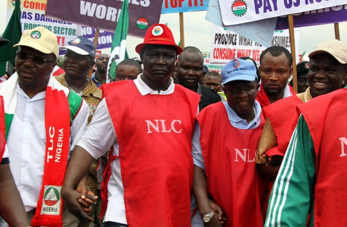

Advertisement
Minimum wage: Meeting adjourned as Labour rejects
fresh N54,000 offer
22nd May 2024

Adebayo Folorunsho-Francis, Deborah Tolu-Kolawole and Henry Falaiye
Organised Labour has again rejected the latest offer of N54,000 minimum wage made by the
Federal Government during the resumed national
minimum wage negotiation on Tuesday.
The stalemate resulted in the postponement of the meeting to Wednesday following the inability
of the
labour leaders and government representatives to reach a consensus.
This was the third time the officials of the Nigeria Labour Congress and the
Trade Union Congress
and representatives of the government would fail to find a common ground on the national minimum wage.
Last week, the
labour leaders walked out of a meeting hosted by the tripartite committee on minimum wage negotiation
after the Federal Government offered to
pay N48,000.
At the same time, the Organised Private Sector made an initial offer of N54,000 in response to labour’s proposed N615,000.
The National President
of the NLC, Joe Ajaero, insisted on N615,000
minimum wage, arguing that the amount was arrived at
after an analysis of the current economic
situation and the needs of an average Nigerian family of six.
He accused the government of failing to provide any substantiated data to support its offer, noting that this undermined
the credibility of the negotiation.
To bring back labour to the negotiation table, the Chairman of the Tripartite Committee on National Minimum Wage, Alhaji Bukar Goni,
informed the group that the government had agreed to raise the N48,000 it earlier proposed.
However, at the Tuesday meeting, the government proposed N54,000 but labour insisted on its N615,000 living wage demand.
Labour officials, who were privy to the negotiation, said the Federal Government increased its offer from N48,000 to N54,000.
The sources declined to be quoted because they were not permitted to disclose the details of the negotiation to the media.
N54,000 offer
One of the officials said, “Well, during the meeting, the government increased its offer from N48,000 to N54,000. However, labour rejected
that offer and the meeting has been adjourned to Wednesday (today).’’
Another source stated, “They didn’t show any seriousness at all. As regards the private sector, we did not get to them before the meeting
was adjourned but we hope they would also increase their initial offer.”
Also, speaking anonymously, a top labour leader noted that the government was ashamed about its offer “Because it knew it was not realistic
and it knew it was not going to be accepted.’’
“They knew it was embarrassing to offer workers that kind of paltry sum. Negotiation has not started; negotiation can only start when the
government shows seriousness in negotiating,” he stated, warning state governors and the OPS.
He added that organised labour could not negotiate wage reduction because private sector workers were receiving N77,000.
Ajaero and Usifo could not be reached for comments on the stalemated meeting as calls to their phone rang out. They did not respond to
messages seeking their comments on the development.
But the Deputy President of NLC Political Commission, Prof. Theophilus Ndubuaku, told The PUNCH that the Federal Government was deliberately
frustrating the Nigerian workers.
Ndubuaku stated that the government was not showing empathy despite knowing that the masses were struggling to adjust to the hardship and inflation
occasioned by its policies.
He said, “We are worried about this government. It was as if we were negotiating with people who were not Nigerians. They are behaving like expatriates
or people from outer space. We don’t understand.
“They were offering N54,000 as the minimum wage as if they were expecting us to negotiate a deregulated salary structure. As it is now, nobody is earning anything
below N77,000.
“You recall there was N30,000 minimum wage plus the N35,000 they added as wage award. Before that time, there was a 40 per cent increase in the existing wage making
the whole thing N77,000. Now, imagine how they are now offering us something far lower than what workers are expected to take home.’’
He added, “Imagine if we walk out of that negotiation agreeing to such terms, will Nigerian workers not mob you? This government doesn’t know the implications of what they are doing.
“It has never happened anywhere in the world before where everything including foodstuff is increasing and you are concentrating on wage decrease in a country where hardship is hitting everybody.
To us, it looks like these people are either joking or they are from outer space.”
On the next course of action being considered by the NLC following the fiasco, Ndubuaku said the unions are returning to the negotiation table on Wednesday from where they would decide whether to
tell workers to stay back home until the Federal Government comes up with an acceptable offer.
“The Plan B is that we have adjourned till tomorrow (today). But if they continue with this joke, the workers themselves will give them the answer to that joke.
“We will have to tell them that we didn’t succeed and everybody should sit at home. That is the way it is going to be until they wake up,” he stated.
The Federal Government could not be reached for comments as the Minister of Information, Mohammed Idris, did not return calls and a message sent to his line.
Group faults govt
Commenting on the stalemate, the Campaign for Democratic and Workers’ Rights described the N48,000 and N54,000 minimum wage proposals by President Bola Tinubu-led government and the OPS as a huge joke.
The CDWR in a statement by its National Chairperson, Rufus Olusesan and National Publicity Secretary, Chinedu Bosah, observed that the N48,000 offered by the Tinubu-led government was a natural response
“from a government whose agenda for growing the exploitative capitalist economy is to further enrich the privileged-few and pauperise the working masses.’’
The group stated, “The capitalist government and the private company owners have always stated that there is no money to pay workers a living wage, but money is readily available for frivolities, profligacies,
insane privileges and payment of jumbo salaries and allowances to top political office holders and management staff.
“SUV cars were bought for N57.6bn by National Assembly members. This is one of the numerous examples of profligacies that have become the hallmark of the capitalist ruling elite. While workers earn their wages
through their productivity, the capitalist ruling elite are parasitic on the economy.’’
The CDWR said the NLC and TUC leadership got it wrong when it refused to resist ‘’the anti-poor neo-liberal policies and instead sought to secure some remedy for Nigerian workers through wage review.’’